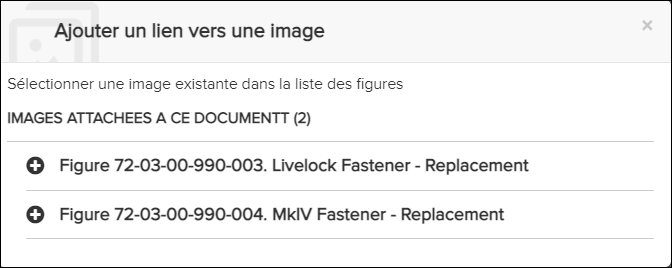

Non applicable pour Pinpoint Standalone Light.
-
Dans la barre d'outils de création, cliquez sur l'icône
 Insérer un lien vers un graphique pour ajouter un lien
graphique.
La boîte de dialogue Ajouter un lien vers une image apparaît.
Insérer un lien vers un graphique pour ajouter un lien
graphique.
La boîte de dialogue Ajouter un lien vers une image apparaît.
Ajouter un lien vers une image